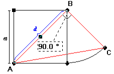
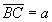
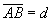
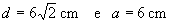
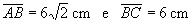
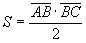
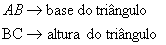
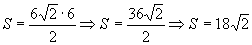
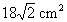

Voltar
Voltar

O triângulo em questão está representado na figura ao lado.Pela construção observamos que o lado BC tem medida igual a aresta do cubo(além disto é uma altura deste triângulo retângulo). Temos então:

O cateto AB do triângulo coincide com a diagonal de uma face, ou seja:

Mas pelo item 01:

Portanto:

A área do triângulo ABC pode ser dada por:
|
 |
 |
Substituindo os valores na fórmula acima:

A área do triângulo ABC é de:
|
 |
Conclusão: O item 32 é verdadeiro.
Voltar